헤어지고 일주일,
괜찮은 척하는 남자 머릿속
(SNS엔 아무 일 없는 그 사람.)
1/14
@mszexc
넘겨보세요 →
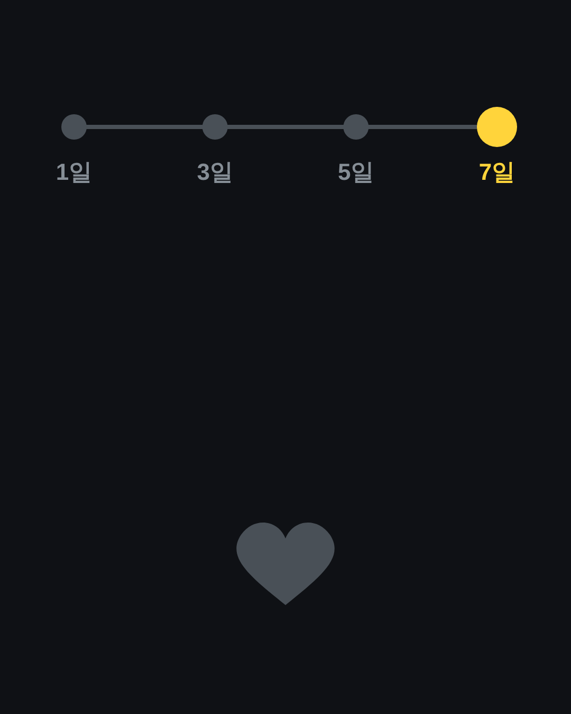
헤어지고 일주일.
그 남자, 진짜 괜찮을까요?
2/14
@mszexc
남자들끼리 하는 말 #55

겉으로는
"나 잘 지내."
(친구들한테도, SNS에도.)
3/14
@mszexc
남자들끼리 하는 말 #55
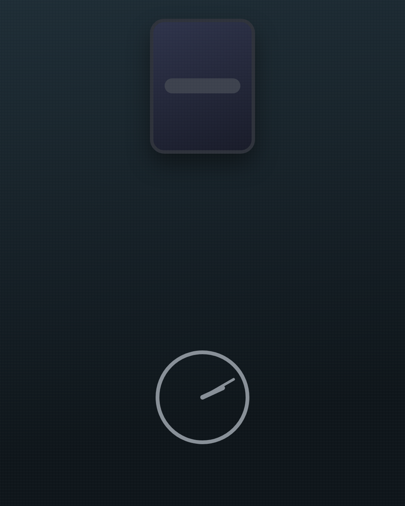
속으로는
"연락 오면 뭐라고 하지?"
(하루에 몇 번씩 휴대폰을 봐요.)
4/14
@mszexc
남자들끼리 하는 말 #55
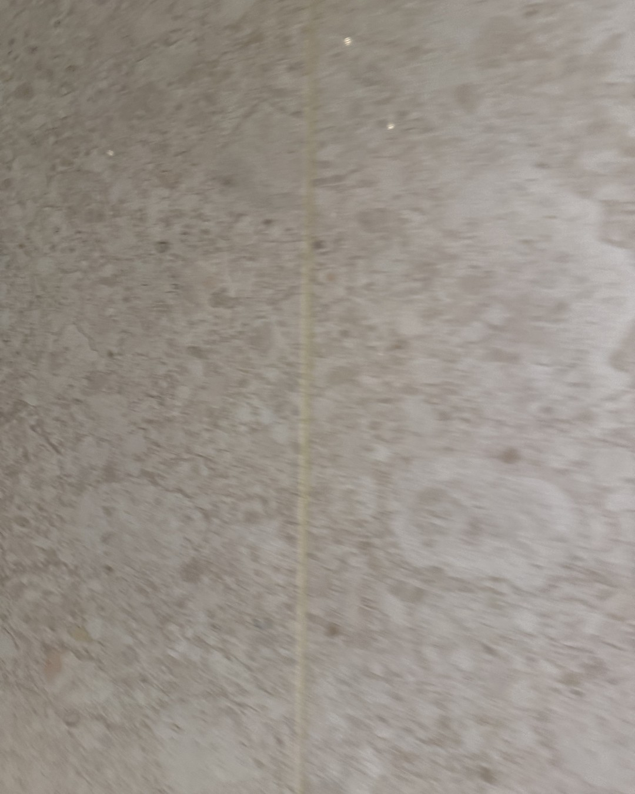
1일째.
해방감. "드디어 자유다."
(이게 오래 안 가요.)
5/14
@mszexc
남자들끼리 하는 말 #55
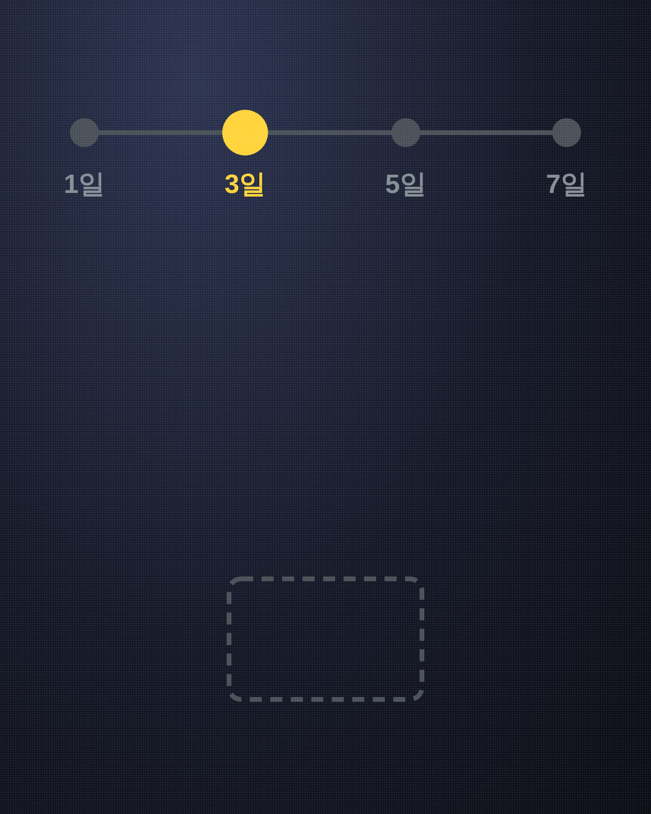
3일째.
빈자리가 보이기 시작해요.
(습관처럼 연락하려다 멈춰요.)
6/14
@mszexc
남자들끼리 하는 말 #55
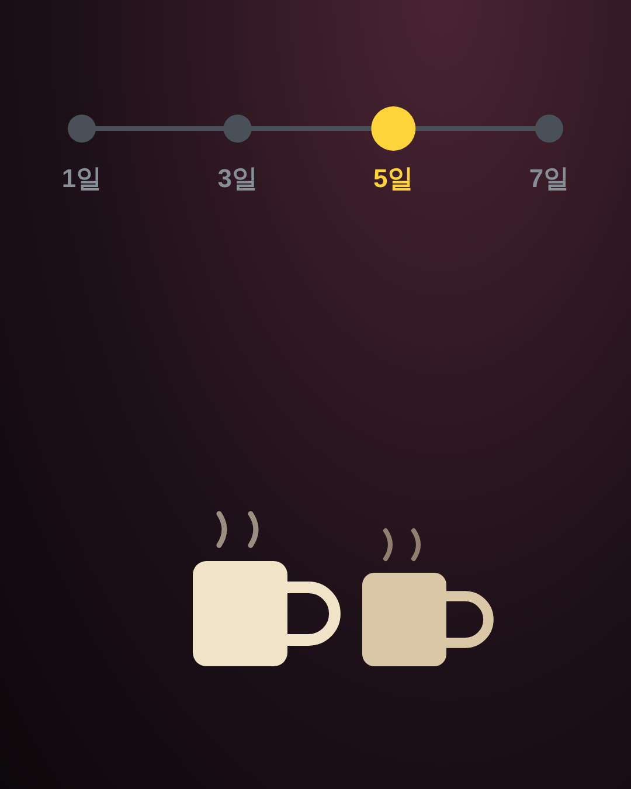
5일째.
친구들과 술자리가 늘어요.
(혼자 있는 시간을 피하는 거예요.)
7/14
@mszexc
남자들끼리 하는 말 #55
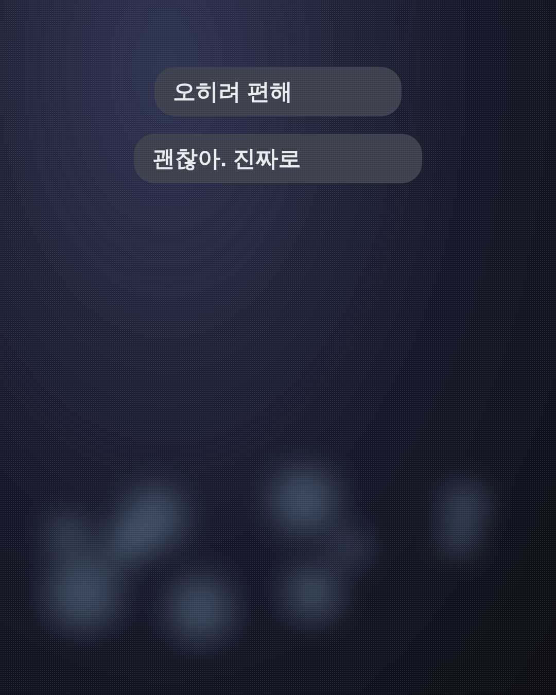
남자들끼리는 이렇게 말해요.
"괜찮아. 오히려 편해."
(괜찮다고 두 번 말하면, 안 괜찮은 거예요.)
8/14
@mszexc
남자들끼리 하는 말 #55
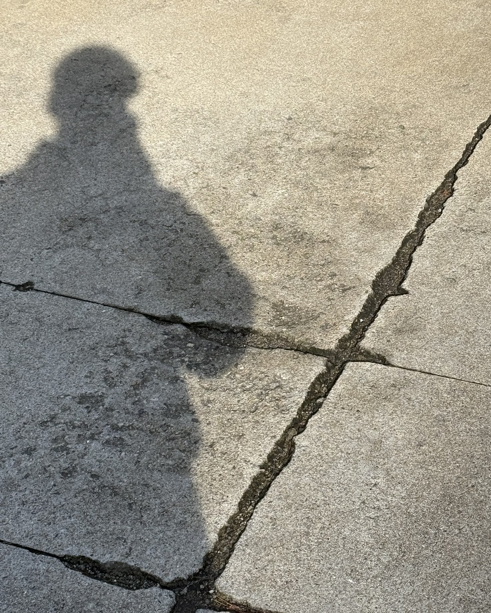
7일째.
당신 프로필을 몰래 봐요.
(사진이 바뀌었는지, 잘 지내는지.)
9/14
@mszexc
남자들끼리 하는 말 #55
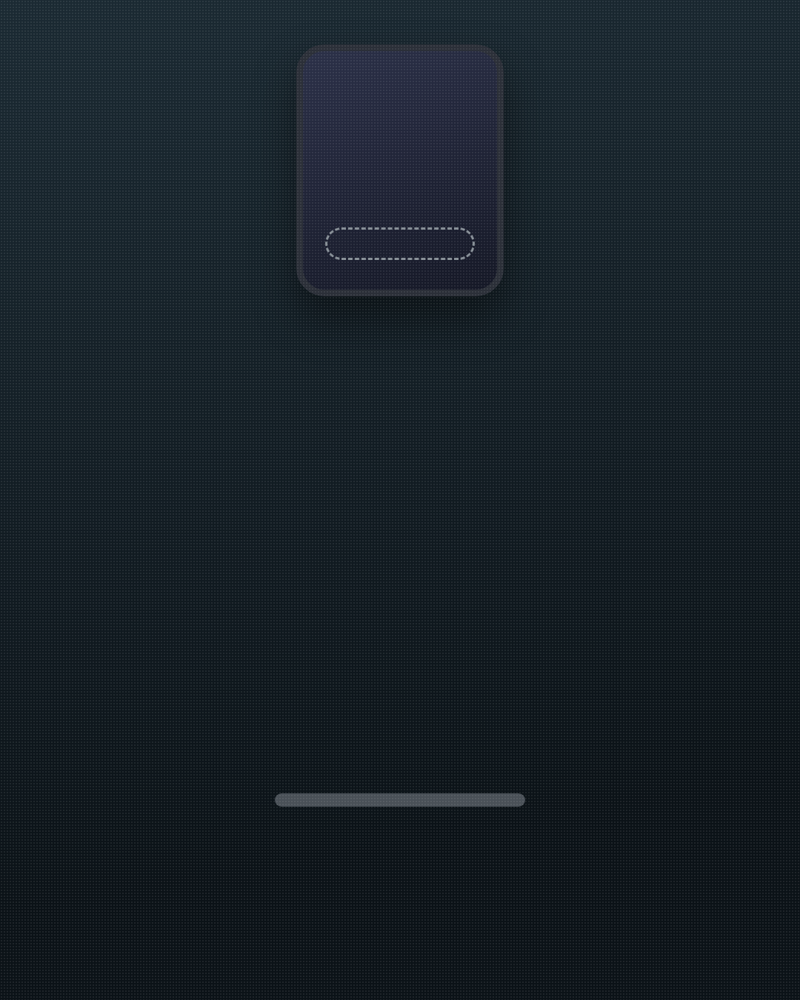
그런데 남자는
먼저 연락하지 않아요.
(자존심, 그리고 "또 같은 이유로 헤어질까 봐".)
10/14
@mszexc
남자들끼리 하는 말 #55
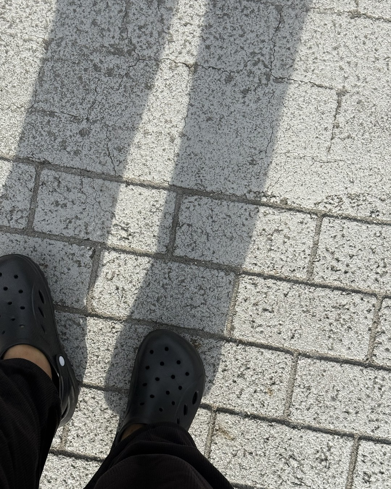
그래서 이 시기엔
아무것도 보내지 마세요.
(일주일 만의 연락은 그의 결심만 굳혀요.)
11/14
@mszexc
남자들끼리 하는 말 #55
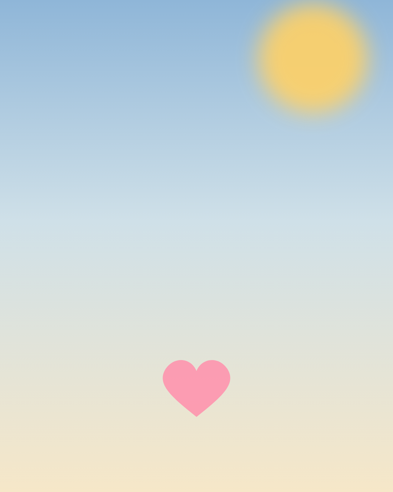
대신 당신 하루를
잘 사세요.
(그 남자는 지금도 보고 있어요.)
12/14
@mszexc
남자들끼리 하는 말 #55
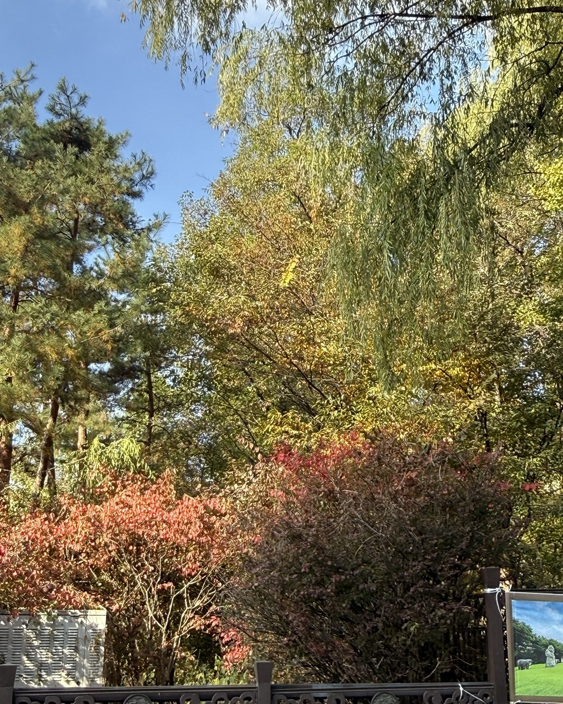
남자가 진짜 흔들리는 건
괜찮은 척이 바닥날 때예요.
(보통 일주일보다 훨씬 뒤에 와요.)
13/14
@mszexc
남자들끼리 하는 말 #55
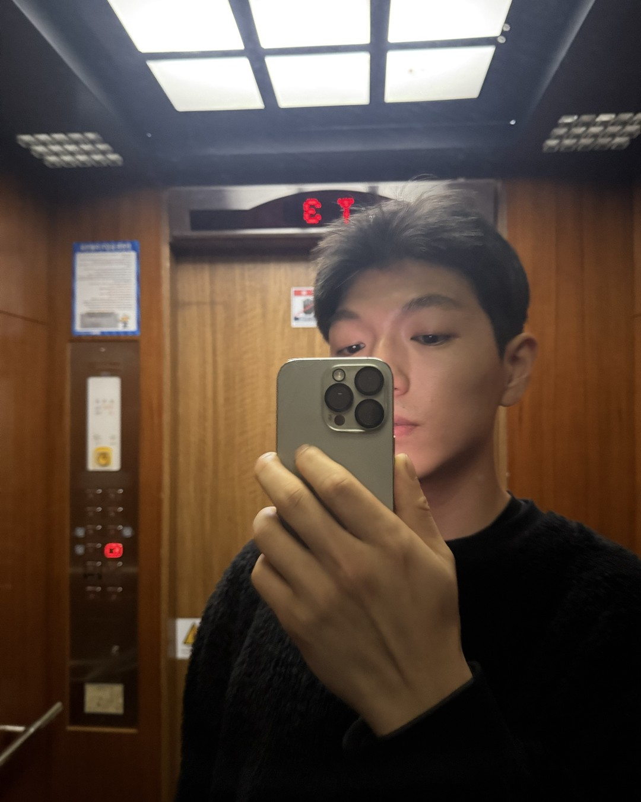
이것만 기억하세요.
괜찮은 척이 길수록, 안 괜찮은 거예요.
남자가 하는 말의 뜻은 전자책 1·2권에 · 프로필 링크에서 무료로 받아보세요
14/14
@mszexc
남자들끼리 하는 말 #55